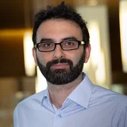

Hi, I'm
Javad Noorbakhsh
Bioinformatics & Machine Learning Scientist
Boston, MA
Computational biologist working on AI methods for cancer spatial omics and computational pathology, with a research background spanning cancer genomics and systems biology. Leads technical teams and cross-functional research collaborations.
Phone number available upon request
Research Focus
AI for Computational Pathology & Spatial Omics
Deep learning and foundation-model pipelines that extract diagnostic and biological signal from histopathology images and spatial transcriptomics/proteomics data.
Cancer Genomics & Tumor Evolution
Quantifying tumor heterogeneity, subclonal dynamics, and evolutionary pressure in cancer using large-scale genomic and multi-omics datasets.
Systems Biology & Biophysics
Quantitative modeling of cellular signaling dynamics, gene-regulatory noise, and collective behavior in biological populations.
Highlighted Publications
- Deep learning-based cross-classifications reveal conserved spatial behaviors within tumor histological images
- Repeat expansions confer WRN dependence in microsatellite-unstable cancers
- Longitudinal molecular trajectories of diffuse glioma in adults
- CCNE1 amplification is associated with poor prognosis in patients with triple negative breast cancer
- From intracellular signaling to population oscillations: bridging size‐and time‐scales in collective behavior